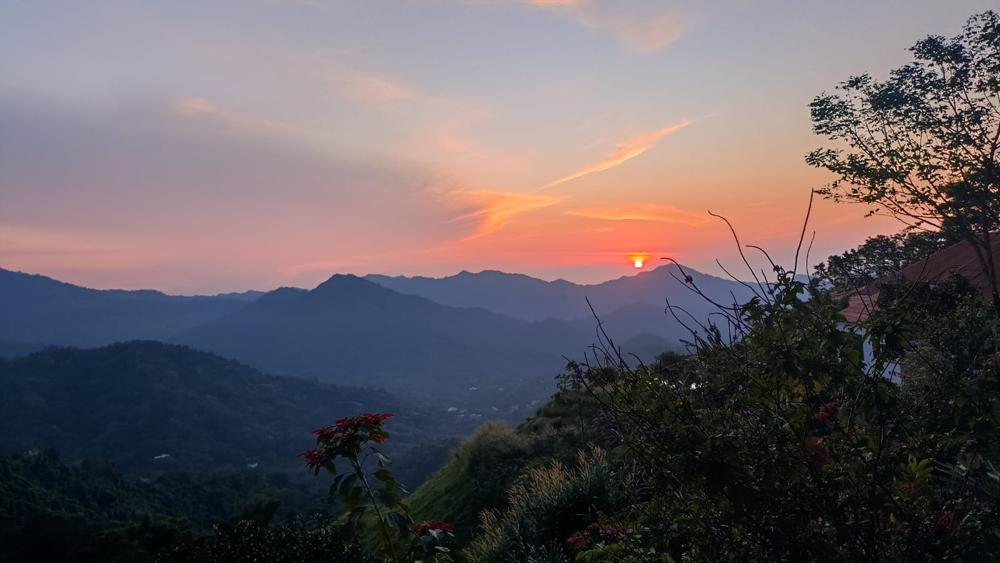

De todos los lugares en los que he estado tengo que decir que uno de mis favoritos es Minca un pueblo que queda llegando a la sierra nevada de santa marta en el cual la mayoria de la poblacion son europeos y asiaticos, y en lo particular una de las cosas que resalta es que apartir de las 6 de la tarde se siente una paz y un silencia tan acogedor que luego de experimentar esa sensacion no quisiera salir de ese lugar nunca más.
